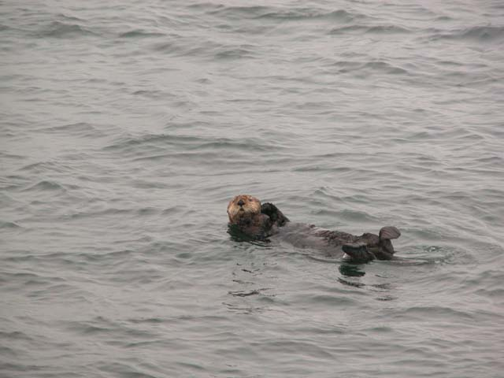

about
About meAbout this site
My plan
My other life
My products
My publications
aop
My Runtime Aspect WeaverWhat is AOP?
book
About Inside the CLRarticles
Book suggestionsInterface dispatch vs. object reference dispatch
x86 Resources
Entertainment PC's Part 2
Entertainment PC's
Hello CppUnit
archives
November 2002October 2002
September 2002
August 2002
July 2002
June 2002
May 2002
April 2002
March 2002
February 2002
January 2002
December 2001
August 2002 Archives
Anchorage, Alaska
27 Aug, 2002
The last day of our stay in Alaska was up in Anchorage. As I was going through my receipts, they reminded me to recommend two different places if you are ever up that way. If you're staying in Anchorage, you will be totally spoiled by staying at the Gourmet Fleurs bed and breakfast. It is run by Suzie Stranik, who is a most gracious host. The second recommendation is to eat at the Southside Bistro, which has excellent food.
In memorium: Galen Rowell
25 Aug, 2002
I recently began exploring photography as a creative outlet, and I stumbled across Galen Rowell's most excellent Inner Game of Outdoor Photography while browsing in my local Chapters bookstore. The moment I began reading the preface to his book, I knew that I had found someone really, really special. As I continued to read each one of the sixty-five essays in this book, the words and the images spoke to a part of me like nothing that I had ever read before.
I wondered why I felt so strongly drawn towards photography. As I learned more and more about the subject and its practioners, I realized that photography shares much in common with music and computer science. On one hand, it requires absolute mastery of technical information. Well-defined procedures must be precisely executed to get the desired results. But perfect execution is not nearly enough; each one of these disciplines also requires a considerable amount of abstract thought. We also speak of beautifully composed photographs, of musical music, of elegant software.
Which brings me to the point of this entry: like many others, I never met Galen Rowell. I learned of his untimely death while flying home from our honeymoon. Carolyn was reading the Globe and Mail, and the obituary section featured a photograph of Galen standing next to his most famous photograph: that of the rainbow striking the Dalai Lama's Potala palace. At that moment, I was suddenly struck by a sense of loss unlike any that I had felt before for someone that I never met. To say that his photographs and his writings have changed my life is an understatement. Galen taught me how to ask the question: "Which life experiences are the most worth living?"
My condolences go out to those who loved Galen and his wife Barbara, as well as Tom Reid and Carol McAfee who were also on board their plane that crashed during their final approach to Bishop airport in California. To paraphrase Norbu Tsering who wrote a heartfelt passage in their guest book: Heaven needs beautiful people too.
Living with the Nikon Coolpix 5700
23 Aug, 2002
I've now shot over 1700 pictures using our Nikon Coolpix 5700, some under rather challenging conditions. I'm writing this to highlight some of the things that I have learned about the idiosyncracies of the Coolpix 5700.
First off, the zoom is excellent. It's a 280mm equivalent zoom, which is quite useful for most kinds of photography. It's more than enough zoom to significantly collapse perspective, which can create shots like this
On this trip, I was hoping to capture some magnificent sunsets in Alaska. So I wanted to purchase some graduated neutral density filters. This was when I discovered that Nikon has no "official" solution to attaching filters to your lens! None of the Nikon dealers that I visited in Vancouver could provide me with a solution. After a bit of searching on the Internet, I discovered that there is someone who is selling an adapter. I couldn't get one shipped to me before I embarked on our cruise, so this was the best that I could do:
I also tried out the Nikon 1.5x teleconverter. This would convert my 280mm equivalent zoom to a 420mm. Unfortunately for me, I balked at buying the teleconverter, and bought a remote shutter release instead. This is why my best shot of wild sea otters in Alaska looks like this:

Now here's a number of things that are I find annoying about the Coolpix 5700:
1) The positioning of the controls on the left hand side of the lens body. I find that I accidently hit these controls, particularly when composing shots on a tripod. The worst offender is the button that selects the image size. Why this is present as its own button and not as a menu option is beyond me. This button would be far better served as a toggle through the white balance settings on the camera. Hitting this button accidently and setting the camera into Hi mode has cost me at least two really great pictures. It takes a long time to write a Hi image out to the CF card.
2) The fact that you can't go into BSS (Best Shot Selector) mode if you've got Noise Reduction enabled. I find that I frequently go from one or the other when I'm passing through the threshold of 1/4 second exposures into slower shutter speeds.
3) The fact that you have use the menu to measure middle-grey to set the white balance of the camera. A shortcut button here would be really useful.
4) Why isn't the quick action mode enabled by default in the camera? This is the mode that significantly reduces shutter lag in the camera. It took me weeks to find this setting in the manual (and it took reading the brochure to discover this feature even existed!).
5) Why isn't the manual for the Coolpix 5700 available for download on the web? I left my paper manual at home, and couldn't download a new copy like I could for my venerable Coolpix 950.
The Great Honeymoon Trick
19 Aug, 2002
This is a story about how we started off driving to Tobermory, but wound up in Alaska. I'm writing this on Day 6 of our honeymoon cruise. I'm sitting at a table in La Playa Grill, a cafeteria on our cruise ship, the Carnival Spirit. A pack of noisy teenagers just ran by, looking for trouble. The table that I'm sitting at is angled so that it faces the port side of the ship at a 45 degree angle. There are floor-to-ceiling windows in front of me, and I'm looking at the Gulf of Alaska on a mostly cloudy day. We just left our final port of call, the city of Sitka, where we went on a wildlife cruise through the islands around Sitka. How we got onto this cruise ship in Alaska makes for a great story. So it's time to reflect back on the events following our wedding.
When Carolyn and I were planning our wedding, we "decided" that we would do a simple honeymoon following our wedding, and then do something longer and more interesting during Christmas break. Our original plan was to go to Tobermory for our honeymoon. Tobermory is a small town at the northern tip of the Bruce Peninsula in Georgian Bay. It's a picturesque tourist town and a favorite dive spot. A friend of ours from college runs an Inn and a gift shop in Tobermory, so it made a perfect cover story for my evil scheme.
In the interests of operational security, only my brother and my dad knew about my scheme, and only my brother was privy to all of the details. This, of course, meant that I had to consistently lie to everybody who asked where we were going on our honeymoon. Now, Carolyn believes that she can always detect when I'm lying; in fact, her exact words are "you can't lie worth shit". As my evil scheme unfolded, I enjoyed making her eat those very words time and time again. To all of our friends and family that I did lie to about our honeymoon plans, please accept my sincere apologies for having deceived you ;) Now back to our regularly scheduled story.
On the day after our wedding, we woke up late in the morning after spending a wonderful night at the Old Mill Inn in Toronto. Carolyn's quite used to my anal-retentive scheduling behavior, so she didn't put up much of a fight when I told her that we needed to be on the road by 1:30pm. We were driving her car to "Tobermory", and I "volunteered" to drive the first leg in the 5 hour drive. Carolyn was on the cel phone talking to her parents as we drove north on Highway 427. Fortunately, Highway 427 in Toronto passes right by the airport. Surprisingly, she didn't say anything when I detoured and drove into the airport. It wasn't until the concrete in the short-term parking garage cut off her cel phone signal that she began asking me what was going on.
While driving to the airport, I had a primary cover story planned to continue the deception. When we pulled into the airport, I decided to improvise a bit so that I could keep her in the dark a bit longer. While we were unloading our luggage from our car, I told Carolyn that we were going to take a float plane up to Tobermory and that she should thank her uncle Jim, who is an Air Canada pilot. She got so excited that she called her parents back to tell them about our revised plan.
Now, I realized that this little feint would only last until we walked into the boarding area of the Boeing 767 that was going to fly us to Vancouver. So I decided to 'fess up earlier, and sprang my primary cover story on her. When we walked into Pearson International Airport's Terminal 2, we were met by my brother Thomas, who was also my best man at our wedding. Thomas' job was to drive our car home (in reality he's going to spend 10 days driving around in our Subaru Outback wagon). Thomas was in on the real plan so he helped out by reinforcing the "real" story.
This time, I told Carolyn that we were flying to Vancouver so that we could drive down to Seattle. My story involved some rich Microsoft "volunteers" who would loan us their spectacular hillside vacation home on the side of Mt. Ranier in Seattle (I even talked about how owning such a home would be advantageous under the US taxation code). Unfortunately for us, the home wouldn't be ready for us until Wednesday, so we would stay for a couple of nights in Vancouver before traveling by car to Seattle.
We spent those evenings at the Fairmont Waterfront, which as it turns out, is right across the street from the Cruise Ship Terminal. During the days, we walked around Stanley Park in Vancouver, and did some shopping. The shopping was necessary because I had earlier explained to Carolyn that we were going to attend a formal function that was to be held at Bill Gates' house. So off we went to buy her some formal clothes that she would need for our formal nights on board the cruise ship.
On Wednesday, I began to get worried because she pointed to the giant cruise ship (the Carnival Spirit) which had docked at the Cruise Ship terminal early in the morning. Fearing that she would put two and two together, I decided to throw one more curve ball at her. Early in the morning we needed to finish some shopping. The previous day, I had ordered a Nikon EU1 remote shutter release from a Dunn and Brundle, a camera store on Granville street in Vancouver. While returning from that shopping trip (which I made alone), I dropped by the bell stand at the Fairmont and got Vincent, one of the bell captains, involved in my evil scheme.
Vincent would pick up our luggage from our room and have it stored in the luggage room. As our departure time (1:30) approached, he would have our luggage loaded onto one of the hotel courtesy cars to drive us to our "car rental place", where we would pick up our car to drive to Seattle. After pulling away from the hotel, he asked me what "car rental place" we were picking up our car at. I told him Thrifty's, as this would give us an excuse to drive into the Cruise Ship Terminal.
We drove around for a while in downtown Vancouver due to some construction that was taking place next to the hotel, before returning to the cruise ship terminal. We pulled up to the cruise ship departure gate and asked the traffic attendant where Thrifty's was. She told us that it was one level down from where we were, but we "elected" to offload our bags where we were.
What happened next was priceless. A Carnival baggage attendant came over to pick up our bags. Carolyn began arguing with the baggage attendant as she tried to explain to him that we weren't going on a cruise; we were really there to pick up a rental car! That was when I had to tell her that we were going on an Alaskan cruise. The surprise was so complete that Carolyn refused to believe that we were going to Alaska, and she kept hitting me in line and drawing lots of attention. She kept asking me where we really were going. Eventually, reality sunk in as she saw all of the signs proclaiming that we were going to Alaska, and she got a chance to look at our cruise ship tickets.
So there you go. That's the story of the Great Honeymoon Trick, and how we wound up driving towards Tobermory, but wound up in Alaska instead.
We're off!
10 Aug, 2002
We're off to get married! Thanks to everyone who sent along their best wishes. I wish that I had the time to respond to each of you personally. Thanks again to everyone; it really meant a lot to us.
We'll be back the week of August 26th. See y'all then!
I'm getting married!
09 Aug, 2002
I'm marrying Carolyn Kerr! We met at college almost 14 years ago, and after many many years, we're (finally) getting married! I'm really looking forward to spending the rest of my days with her beginning this Sunday. Wish us luck!
Public keys and public key tokens
05 Aug, 2002
I spent some time this morning doing some "dotting the i's work" on my metadata engine. One of the things that I've been holding out implementing for a while because it wasn't particularly important in my test cases was adding some code that would generate efficient assembly references to strongly-named assemblies.
Strongly-named assemblies contain the signer's public key embedded in the assembly. You can see this by opening up the assembly using ILDASM and viewing its manifest. Inside the manifest, there must be a .publickey section if that assembly has a strong name. If you look at one of these sections, you'll see that it is rather large. For example, System.Web.dll's public key is 160 bytes in length.
When one assembly references a strongly-named assembly, it must embed a reference to the strongly-named assembly's public key to ensure that an attacker cannot substitute another assembly for the one that it was expecting to find. The simplest solution would be to simply embed the strongly-named assembly's public key in the referencing assembly. As you can see, however, this is not a very efficient solution due to the large size of the public keys.
Microsoft solves the "public key bloat" problem by using a hash of the strongly-named assembly's public key. These hashes are referred to as public key tokens, and are the low 8 bytes of the SHA1 hash of the strongly-named assembly's public key. SHA1 hashes are 160 bit (20 byte) hashes, and the top 12 bytes of the hash are simply discarded in this algorithm.
Calculating the SHA1 hash of an assembly's public key turns out to be really straightforward using the CryptoAPI hashing functions. Here's a simple piece of code that will generate an SHA1 hash:
bool CalculatePublicKeyToken( const unsigned char *publicKey, ULONG publicKeyLen )
{
if( 0 == publicKeyLen )
return true;bool result = false;
HCRYPTPROV hProv = 0;
HCRYPTHASH hHash = 0;
unsigned char buffer[ 20 ];
DWORD bufferLen = 20;if( CryptAcquireContext( &hProv, 0, 0, PROV_RSA_FULL, 0 ) )
{
if( CryptCreateHash( hProv, CALG_SHA1, 0, 0, &hHash ) )
{
if( CryptHashData( hHash, publicKey, publicKeyLen, 0 ) )
{
if( CryptGetHashParam( hHash, HP_HASHVAL, buffer, &bufferLen, 0 ) )
{
DumpPublicKeyToken( buffer, bufferLen );
result = true;
}
}
}
}if( hHash ) CryptDestroyHash( hHash );
if( hProv ) CryptReleaseContext( hProv, 0 );return result;
}It is also possible to use the StrongNameTokenFromAssembly API defined in the StrongName.h header file in the Framework SDK. However, this API assumes that the assembly isn't loaded already, which certainly isn't the case in my code.